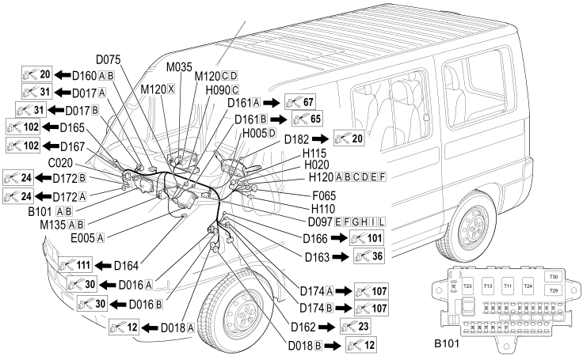

19 OPTIONAL DASHBOARD
- Path
- Electrical equipment > 2 WIRING > 19 OPTIONAL DASHBOARD
- Kind
- wiring harness
- Applies to
- all engines; all production periods; only with equipment: Steering wheel radio controls and speakers and Minibus and CONNECT
- Interactive page
- https://sloeber94.github.io/elrnDB-fDct/en/#/244002112
Applies to: all engines; all production periods; only with equipment: Steering wheel radio controls and speakers and Minibus and CONNECT

Topics that link to this page (103)
- B101B OPTIONAL JUNCTION UNIT UNDER THE DASHBOARD (OPTIONAL DASHBOARD)
- B101B OPTIONAL JUNCTION UNIT UNDER THE DASHBOARD (OPTIONAL DASHBOARD)
- C020 PASSENGER SIDE DASHBOARD EARTH (OPTIONAL DASHBOARD)
- C020 PASSENGER SIDE DASHBOARD EARTH (OPTIONAL DASHBOARD)
- C020 PASSENGER SIDE DASHBOARD EARTH (OPTIONAL DASHBOARD)
- D016A ADDITIONAL DASHBOARD/LEFT FRONT DOOR COUPLING (OPTIONAL DASHBOARD)
- D016B ADDITIONAL DASHBOARD/LEFT FRONT DOOR COUPLING (OPTIONAL DASHBOARD)
- D017A ADDITIONAL DASHBOARD/RIGHT FRONT DOOR COUPLING (OPTIONAL DASHBOARD)
- D017B ADDITIONAL DASHBOARD/RIGHT FRONT DOOR COUPLING (OPTIONAL DASHBOARD)
- D017B ADDITIONAL DASHBOARD/RIGHT FRONT DOOR COUPLING (OPTIONAL DASHBOARD)
- D018A ADDITIONAL FRONT/DASHBOARD COUPLING (OPTIONAL DASHBOARD)
- D018A ADDITIONAL FRONT/DASHBOARD COUPLING (OPTIONAL DASHBOARD)
- D018B ADDITIONAL FRONT/DASHBOARD COUPLING (OPTIONAL DASHBOARD)
- D018B ADDITIONAL FRONT/DASHBOARD COUPLING (OPTIONAL DASHBOARD)
- D018B ADDITIONAL FRONT/DASHBOARD COUPLING (OPTIONAL DASHBOARD)
- D075 RADIO PHONE COUPLING (OPTIONAL DASHBOARD)
- D075 RADIO PHONE COUPLING (OPTIONAL DASHBOARD)
- D075 RADIO PHONE COUPLING (OPTIONAL DASHBOARD)
- D097E SHORT CIRCUITING COUPLING (OPTIONAL DASHBOARD)
- D097E SHORT CIRCUITING COUPLING (OPTIONAL DASHBOARD)
- D097E SHORT CIRCUITING COUPLING (OPTIONAL DASHBOARD)
- D097E SHORT CIRCUITING COUPLING (OPTIONAL DASHBOARD)
- D097E SHORT CIRCUITING COUPLING (OPTIONAL DASHBOARD)
- D097F SHORT CIRCUITING COUPLING (OPTIONAL DASHBOARD)
- D097F SHORT CIRCUITING COUPLING (OPTIONAL DASHBOARD)
- D097F SHORT CIRCUITING COUPLING (OPTIONAL DASHBOARD)
- D097F SHORT CIRCUITING COUPLING (OPTIONAL DASHBOARD)
- D097G SHORT CIRCUITING COUPLING (OPTIONAL DASHBOARD)
- D097H SHORT CIRCUITING COUPLING (OPTIONAL DASHBOARD)
- D097I SHORT CIRCUITING COUPLING (OPTIONAL DASHBOARD)
- D097L SHORT CIRCUITING COUPLING (OPTIONAL DASHBOARD)
- D097L SHORT CIRCUITING COUPLING (OPTIONAL DASHBOARD)
- D097L SHORT CIRCUITING COUPLING (OPTIONAL DASHBOARD)
- D097L SHORT CIRCUITING COUPLING (OPTIONAL DASHBOARD)
- D097L SHORT CIRCUITING COUPLING (OPTIONAL DASHBOARD)
- D160A DASHBOARD/OPTIONAL DASHBOARD COUPLING (OPTIONAL DASHBOARD)
- D160A DASHBOARD/OPTIONAL DASHBOARD COUPLING (OPTIONAL DASHBOARD)
- D160B DASHBOARD/OPTIONAL DASHBOARD COUPLING (OPTIONAL DASHBOARD)
- D160B DASHBOARD/OPTIONAL DASHBOARD COUPLING (OPTIONAL DASHBOARD)
- D161A OPTIONAL DASHBOARD/AIR CONDITIONING COUPLING (OPTIONAL DASHBOARD)
- D161B OPTIONAL DASHBOARD/AIR CONDITIONING COUPLING (OPTIONAL DASHBOARD)
- D162 OPTIONAL DASHBOARD/LEFT REAR COUPLING (OPTIONAL DASHBOARD)
- D163 OPTIONAL DASHBOARD/HEATER PAD COUPLING (OPTIONAL DASHBOARD)
- D164 OPTIONAL DASHBOARD/REFRIGERATOR COUPLING (OPTIONAL DASHBOARD)
- D165 OPTIONAL DASHBOARD/OPTIONAL COURTESY LIGHT COUPLING (OPTIONAL DASHBOARD)
- D165 OPTIONAL DASHBOARD/OPTIONAL COURTESY LIGHT COUPLING (OPTIONAL DASHBOARD)
- D165 OPTIONAL DASHBOARD/OPTIONAL COURTESY LIGHT COUPLING (OPTIONAL DASHBOARD)
- D165 OPTIONAL DASHBOARD/OPTIONAL COURTESY LIGHT COUPLING (OPTIONAL DASHBOARD)
- D166 COAXIAL CABLE FOR GPS AERIAL COUPLING (OPTIONAL DASHBOARD)
- D167 COAXIAL CABLE FOR GSM AERIAL COUPLING (OPTIONAL DASHBOARD)
- D172A RIGHT REAR/OPTIONAL DASHBOARD COUPLING (OPTIONAL DASHBOARD)
- D172A RIGHT REAR/OPTIONAL DASHBOARD COUPLING (OPTIONAL DASHBOARD)
- D172A RIGHT REAR/OPTIONAL DASHBOARD COUPLING (OPTIONAL DASHBOARD)
- D172B RIGHT REAR/OPTIONAL DASHBOARD COUPLING (OPTIONAL DASHBOARD)
- D174A OPTIONAL DASHBOARD/PASSENGER COURTESY LIGHT COUPLING (OPTIONAL DASHBOARD)
- D174B OPTIONAL DASHBOARD/PASSENGER COURTESY LIGHT COUPLING (OPTIONAL DASHBOARD)
- D174C OPTIONAL DASHBOARD/PASSENGER COURTESY LIGHT COUPLING (OPTIONAL DASHBOARD)
- D182 OPTIONAL DASHBOARD/AIR BAG COUPLING (OPTIONAL DASHBOARD)
- D182 OPTIONAL DASHBOARD/AIR BAG COUPLING (OPTIONAL DASHBOARD)
- D182 OPTIONAL DASHBOARD/AIR BAG COUPLING (OPTIONAL DASHBOARD)
- E005A TACHOGRAPH (OPTIONAL DASHBOARD)
- E040 ALARM LED (OPTIONAL DASHBOARD)
- F065 FLASHER (OPTIONAL DASHBOARD)
- H005D STEERING COLUMN SWITCH UNIT (OPTIONAL DASHBOARD)
- H005D STEERING COLUMN SWITCH UNIT (OPTIONAL DASHBOARD)
- H005D STEERING COLUMN SWITCH UNIT (OPTIONAL DASHBOARD)
- H005D STEERING COLUMN SWITCH UNIT (OPTIONAL DASHBOARD)
- H005D STEERING COLUMN SWITCH UNIT (OPTIONAL DASHBOARD)
- H005D STEERING COLUMN SWITCH UNIT (OPTIONAL DASHBOARD)
- H007A CRUISE CONTROL SYSTEM CONTROL (OPTIONAL DASHBOARD)
- H007A CRUISE CONTROL SYSTEM CONTROL (OPTIONAL DASHBOARD)
- H007A CRUISE CONTROL SYSTEM CONTROL (OPTIONAL DASHBOARD)
- H007A CRUISE CONTROL SYSTEM CONTROL (OPTIONAL DASHBOARD)
- H007A CRUISE CONTROL SYSTEM CONTROL (OPTIONAL DASHBOARD)
- H007A CRUISE CONTROL SYSTEM CONTROL (OPTIONAL DASHBOARD)
- H020 HAZARD WARNING LIGHTS SWITCH (OPTIONAL DASHBOARD)
- H090C SWITCH CONTROL PANEL (OPTIONAL DASHBOARD)
- H090C SWITCH CONTROL PANEL (OPTIONAL DASHBOARD)
- H090C SWITCH CONTROL PANEL (OPTIONAL DASHBOARD)
- H090C SWITCH CONTROL PANEL (OPTIONAL DASHBOARD)
- H090C SWITCH CONTROL PANEL (OPTIONAL DASHBOARD)
- H110 ADDITIONAL AIR CONDITIONING TEMPERATURE CONTROLS (OPTIONAL DASHBOARD)
- H115 ADDITIONAL CONTROL PANEL (OPTIONAL DASHBOARD)
- H120A PASSENGER COMPARTMENT VENTILATION CONTROL (OPTIONAL DASHBOARD)
- H120B PASSENGER COMPARTMENT VENTILATION CONTROL (OPTIONAL DASHBOARD)
- H120C PASSENGER COMPARTMENT VENTILATION CONTROL (OPTIONAL DASHBOARD)
- H120D PASSENGER COMPARTMENT VENTILATION CONTROL (OPTIONAL DASHBOARD)
- H120E PASSENGER COMPARTMENT VENTILATION CONTROL (OPTIONAL DASHBOARD)
- H120F PASSENGER COMPARTMENT VENTILATION CONTROL (OPTIONAL DASHBOARD)
- I100A REMOTE KEY FOR DISABLING ANTI-THEFT DEVICE (OPTIONAL DASHBOARD)
- I100B REMOTE KEY FOR DISABLING ANTI-THEFT DEVICE (OPTIONAL DASHBOARD)
- M035 ALARM REMOTE CONTROL RECEIVER (OPTIONAL DASHBOARD)
- M120C Connect front panel (OPTIONAL DASHBOARD)
- M120C Connect front panel (OPTIONAL DASHBOARD)
- M120C Connect front panel (OPTIONAL DASHBOARD)
- M120D Connect front panel (OPTIONAL DASHBOARD)
- M120D Connect front panel (OPTIONAL DASHBOARD)
- M120D Connect front panel (OPTIONAL DASHBOARD)
- M120X Connect front panel (OPTIONAL DASHBOARD)
- M120X Connect front panel (OPTIONAL DASHBOARD)
- M120Y Connect front panel (OPTIONAL DASHBOARD)
- M135A ELECTRIC WINDOWS/CENTRAL LOCKING CONTROL UNIT (OPTIONAL DASHBOARD)
- M135B ELECTRIC WINDOWS/CENTRAL LOCKING CONTROL UNIT (OPTIONAL DASHBOARD)